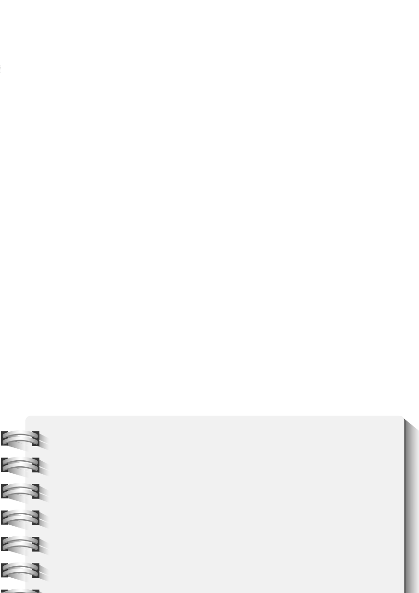

17
Verbeter leesvaardighedeAs jy enige voordeel uit jou onderrig en onderwys wil haal, moet jy kan lees. Nie net lees nie, maar ook sinvol kan lees! Ons glo nie dat hierdie eenheid jou leesvermoë drasties sal verbeter nie; ons wil eerder net weer die belangrikheid van lees met begrip onder jou aandag bring. In hierdie stadium van jou lewe behoort jy vlot te kan lees. Jy behoort met selfvertroue verskillende tekste te kan lees en jy behoort jou leesstyl en -wyse te kan aanpas om jou doel te bereik. Indien jy bewus is dat jou leesvermoë nie op standaard is nie, kry dadelik hulp. Daar is baie professionele mense wat jou met hierdie probleem kan help. Die waarheid is: as jy nie kan lees nie, sal jy ook nie suksesvol kan studeer nie! Kom ons kyk na ’n paar leestegnieke wat jou met jou skoolwerk kan help:• Snuffellees: Jy blaai letterlik deur die teks/boek om te kyk of die inhoud van nut kan wees. Dit word ook vluglees genoem en jou oë dwaal oor die teks.• Kontrolelees: Jy kyk na die indeks vir inligting waarna jy soek. • Fokuslees: Jy lees met meer aandag indien die gedeelte inligting bevat wat jy soek.• Feitesoeklees: Jy lees met die doel om spesifieke data/inligting te bekom.• Agtergrondlees: Jy lees vir agtergrondinligting. Die inhoud gee jou ’n groter prentjie.
Verbeter skryfvaardighedeDie doel met hierdie eenheid is nie om van jou ’n skrywer met ’n kitstreffer op die wêreld se boekelyste te maak nie. Jou taalonderwysers sal jou baie beter daarmee kan help! Net soos met die lees, wil ons die samehang/verbintenis tussen skryf en akademiese sukses beklemtoon. As jy nie wat jy leer kan weergee vir jou onderwysers en later dosente nie, gaan dit maar knor. In die meeste gevalle word jou kennis deur skriftelike assessering getoets. Hoe beter jy dus kan skryf, hoe beter kan jy presteer. Hier volg ’n paar wenke:• Kort en bondig: Gebruik minder pleks van meer woorde. Hou die paragrawe kort, anders verloor die leser die draad van jou storie.• Duidelik en helder: Kies die regte woorde. Sê presies wat jy wil sê• Styl: Maak seker dat wat jy skryf jou gemoedstoestand weerspieël.
‘n JoernaalDie deugde van die byhou van ’n joernaal is al deur die geskiedenis deur baie mense besing. Miskien is jy self een wat getrou jou belewenisse neerskryf en dus dié deugde kan beaam. Of miskien glo jy ’n joernaal is nie die ding vir jou nie. Waarom sal jy dan nou ’n joernaal aanhou? Hier is ’n paar redes:• Wat jy in ’n joernaal neerskryf, kan jy later weer na kyk. Dalk verstaan jy wat gebeur het dan beter of dalk onthou jy om iets te doen net omdat jy dit neergeskryf het.‘n Joernaal laat jou jou kop gebruik. Die skryfproses kan nie sonder denkprosesse gebeur nie. Die aanhou van ’n joernaal is dus ook baie goeie breinoefening.• Dit maak jou kop skoon. Deur goed neer te skryf raak jy eintlik daarvan ontslae. Jy gaan dit nie vergeet nie en jy kan later daarna terugkom. Jy kan dus nou maar ophou om daaroor te stres.’n Joernaal skep struktuur in jou lewe. Dit help met jou doelstellings en hoe jy jou lewe bestuur/leef.
•
•
Hoe lyk ‘n joernaalinskrywing?
Woensdag 12 Augustus
Die skooldag was maar dof. Min opwinding met baie verveli-ge onderwysers. Was ook nie my gunsteling vakke vandag nie! Môre behoort darem beter te wees, want dis netbaloefening. Mnr en Mej Persoonlikheid was vanaand en ons was daar. Kan nie glo Sarel het gewen nie, want hy is ’n regte teachers pet! Pieter moes wen, maar gelukkig het Susan mej persoonlikheid gewen. Cool! Ons is daarna na die Spur vir ’n pizza. Van die beste wat ek nog kan onthou. Eet net nooit weer daai chip-serige goed wat soos iets op ’n sypaadjie lyk nie! Wonder of ons môre die eksamenrooster gaan kry?